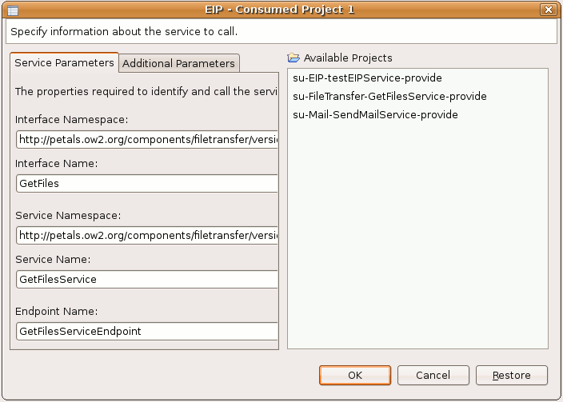

The EIP component allows one to create a service chaining and invoking other services in the bus.
The EIP plug-in allows you to create a project configuring this Petals component.
It also creates an EIP configuration which references the different services to invoke and the way to chain them.
The way services are chained is called the pattern.
Depending on the pattern, some parameters may have to be configured to obtain the expected behavior.
There are slight differences between the usual wizard, as exposed in the Petals plug-ins overview, and the Petals EIP plug-in. This page shows these differences and will guide users to build their Enterprise Integration Pattern Services.
To run the EIP wizard, select File > New > Other... and then select Use EIP in the Petals category.
The three first pages are well known pages, common to the usual wizards.
First, you select the version of the EIP component you want to use.
Then, you find the page expecting information related to the service you want to propose in Petals.
The third page is the page where you define project settings.
The fourth page is specific to the EIP plug-in. It allows you to define the EIP general configuration.
Depending on the pattern to use, some parameters may need to be filled.
Please, refer the EIP component documentation to better understand the meaning of the parameters.
Once you have chosen the proper configuration, click the Next button.
Now, select the services you want to chain with your pattern.
Click on the Add... button, select the created entry in the list panel and click Edit....
A dialog shows up. It allows you to specify the services to consume inside your pattern. You can either fill in the interface, service and end-point manually, or select a project on the right part of the dialog, in which case the fields should be completed automatically. Click OK when the service specification is complete.

Repeat the process over and over until you have selected all the services you want to involve in your EIP service.
Once it is done, click Next. You should then find back the usual wizard elements, as described in the general documentation.